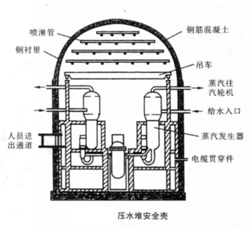

中核集团
2017年核科普开放周活动之第二届全国高校学生课外“核+X”创意大赛
核+动力
主页
概况
核能
核动力
核反应堆
概况
压水堆
基本构成——核能生成系统
主冷却剂系统——内能转换系统
二回路系统——动能输出系统
安全壳
核电站
概况
中国核电站
潜艇核动力装置
概况
中国核潜艇
水面船舰核动力装置
概况
中国核动力航母
空间核能装置
概况
空间核电源
空间核推进装置
发展和研究前景
中、小型核动力发展情况介绍
中、小核动力未来研究的方向
结论
安全壳
安全壳是包容反应堆、蒸汽发生器及主冷却剂系统的建筑，它是防止放射性物质外逸的重要屏障。压水堆一般都采用预应力混凝土的干式密封安全壳，如图所示。安全壳要承受反应堆发生失水事故时一回路水全部喷放所产生的高压和高温，以及地震、台风、飞机坠落撞击，还有来自内部和外部的飞射物撞击等各种静态与动态载荷而不丧失其保护功能。
安全壳需要有一定的容积来缓解失水事故时壳内压力的升高，因此压水堆的安全壳一般体积都比较大，造价也比较高，它是核电站投资的一个重要部分。一个1000 MW(电功率)压水堆，安全壳直径约为40 m，高度约为60 m，预应力钢筋混凝土的厚度大约1 m。安全壳的设计压力约为0．4～0．5 MPa，运行过程中要定期地进行泄漏率试验，在设计压力下24 h的泄漏量不得超过壳内自由容积的0．1％～0．5％。
安全壳顶部设有喷淋系统，发生事故时喷淋系统可以自动打开，用喷淋水将蒸汽冷凝，从而降低壳内的压力和温度并冲洗掉放射性颗粒。在喷淋水中加入氢氧化钠(NaOH)可以除去气体裂变产物，减少释放到环境中的放射性碘的数量。
安全壳内还设有通风净化系统，在反应堆正常工作时保持壳内空气和温度恒定，不断清除气载放射性碘和活化的颗粒，以满足工作人员进入安全壳内的卫生条件。通风系统还可兼有事故工况下排出热量、抑制压力上升和去除放射性气体的功能。
西南科技大学
石晓钟 陈怡志 张鸿德
指导教师 段涛
指导教师 段涛